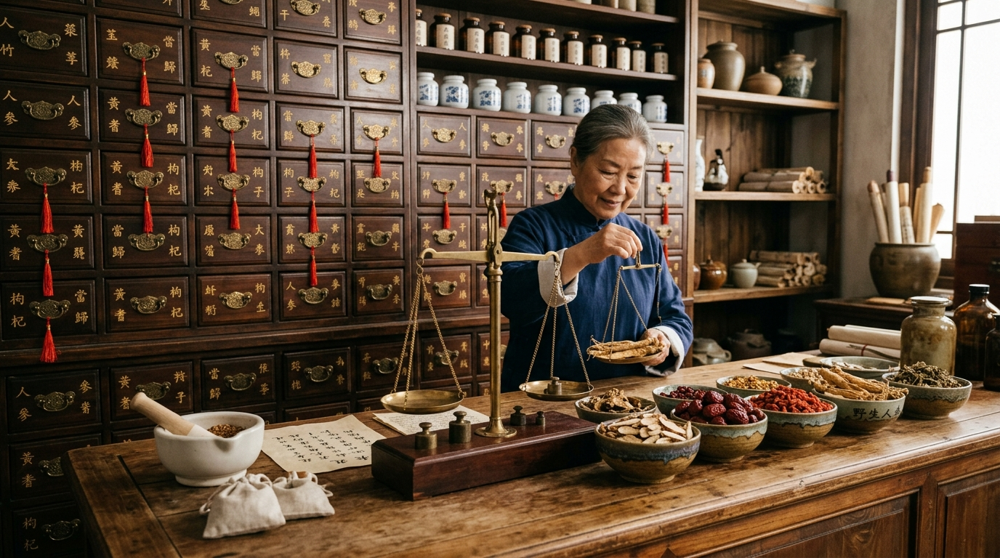
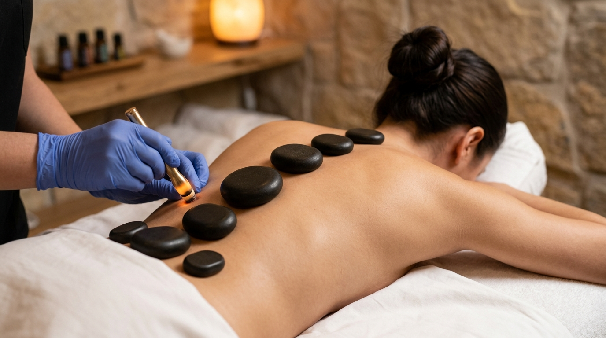
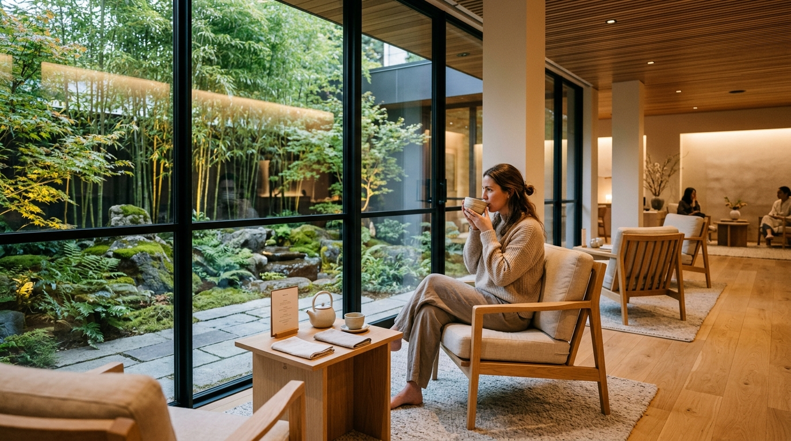
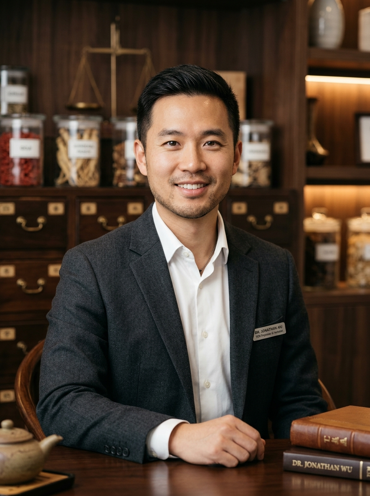

Awaken Your Vital Qi. Master the Art of Long-Term Balance.
Step into an elevated sanctuary of Traditional Chinese Medicine. Through precision neuro-acupuncture, classical Shanghan Lun botanical compounding, and Five-Phase meridian alignment, we cultivate your body's innate healing intelligence for vibrant longevity.
The Four Pillars of Longevity Medicine
Longevity in Traditional Chinese Medicine is the cultivation of vitality across your fundamental energetic treasures: Qi, Jing, Shen, and Xue.
Qi Cultivation
Activating microcurrent conductivity through hair-thin meridian needles to unblock stagnation, relieve physical pain, and reset the central nervous system.
Acupuncture & Electro-Stimulation →Jing Essence
Replenishing deep constitutional Kidney reserves depleted by chronic stress, reproductive transitions, and aging through customized adaptogenic herbal decoctions.
Herbal Compounding & Tonic Alchemy →Shen Harmony
Calming the wandering spirit, soothing the Heart-Brain axis, and restoring deep non-REM restorative sleep through auricular acupuncture and somatic grounding.
Circadian Rest & Vagus Nerve Care →Xue Vitality
Restoring microvascular blood circulation, decompressing rigid connective fascia, and clearing cellular metabolic waste with gentle thermal cupping.
Fascial Decompression & Cupping →Explore Your Five-Element Blueprint
In Traditional Chinese Medicine, human physiology mirrors natural ecological systems. Select an element below to explore its associated organ network, symptoms of imbalance, and tailored treatment approach.
Governing the Free Flow of Qi & Tendons
The Wood element oversees flexibility, vision, and the smooth circulation of blood and Qi throughout the body. When Wood is restricted, symptoms manifest as neck stiffness, migraines, PMS irritability, and sudden stress spikes.
Anchoring the Shen & Cardiovascular Radiance
The Fire element houses the mind and spirit (Shen). When Fire is harmonious, sleep is deep, emotional joy flows easily, and circulation is warm and steady. When depleted or hyperactive, palpitations and restless insomnia appear.

Digestion, Muscle Tone & Nutrient Extraction
The Earth element (Spleen-Stomach) converts nutrition into pure post-heaven Qi and Blood. A strong Earth element prevents bloating, clears chronic brain fog, and keeps muscle tissue resilient.

Defensive Wei Qi, Clear Skin & Respiration
The Metal element controls your immune shield (Wei Qi) and the skin boundary. It governs the body's ability to let go of old patterns and breathe deeply, protecting against environmental pathogens.

Deep Constitutional Jing, Spine & Longevity
The Water element (Kidney-Bladder) is the root foundation of all Yin and Yang in the body. It governs skeletal bone density, marrow, reproductive hormones, and lifelong stamina.

Specialized Clinical Pathways
Evidence-supported treatment regimens combining precision acupuncture, thermal bodywork, and customized herbal extracts.
Spine Decompression & Neuro-Recovery
Targeted motor-point acupuncture, microcurrent stimulation, and warm basalt therapy to release compressed spinal nerve roots, relieve sciatica, and rebuild postural strength.
Botanical Dispensary & Gut Microbiome
Classical Shanghan Lun botanical compounding prepared from third-party certified extracts to restore mucosal barrier integrity, resolve IBS, and calm systemic inflammation.

Women's Health $130 • 60 MinReproductive Longevity & Cycle Harmony
Nurturing integrative protocols for fertility optimization, IVF transfer support, cycle regulation, and smooth perimenopausal transitions guided by FABORM-certified physicians.
An Intentional Healing Environment
Designed according to classical Feng Shui acoustic principles, natural bamboo timbers, and ambient serenity to calm your sympathetic nervous system from the moment you arrive.
Lotus Treatment Suite
Private Heated Linen Tables & Ambient SoundHerbal Apothecary
Third-Party Tested GMP Botanical GranulesPost-Treatment Tea Lounge
Organic Seasonal Herbal Blends & Garden ViewThermal Therapy Suite
Basalt Stone Decompression & Smokeless MoxaSenior Clinical Leadership
Meet the senior doctors supervising our clinical practice, dispensary compounding, and individualized patient roadmaps.

Dr. Meilin Chen
DACM, L.Ac, Dipl. O.M. (NCCAOM) Pain Management • Spine HealthClinical Director specializing in difficult musculoskeletal pain, cervicogenic headaches, and nerve rehabilitation with exceptionally gentle needling techniques.

Dr. Jonathan Wu
Dipl. O.M., MSTCM, L.Ac Chinese Herbal Medicine • DigestionMaster herbalist trained in classical Shanghan Lun formulas. Helps patients resolve stubborn digestive concerns, IBS, metabolic sluggishness, and chronic fatigue.

Dr. Evelyn Zhao
DACM, L.Ac, FABORM Women's Health • Fertility • SleepFellow of the American Board of Oriental Reproductive Medicine. Empathetic care for cycle regularity, fertility optimization, and stress-induced insomnia.
Discover Your Primary Balance Pathway
Select your current sensations to receive an instant constitutional insight and recommended clinical treatment.
Focusing on motor point needle activation, fascia release, and electro-stimulation supervised by Dr. Meilin Chen.
Real Patient Stories of Restored Harmony
Discover how personalized Traditional Chinese Medicine restores sustained vitality and comfort.
"The combination of acupuncture and moxibustion completely resolved my lower back sciatic numbness. The clinic sanctuary feels like a peaceful retreat from busy city life."
"Dr. Wu's personalized herbal tea granules restored my digestion after two years of struggling with severe IBS. Within three weeks my bloating vanished and energy returned."
"Dr. Zhao is an absolute angel for reproductive wellness. Her caring guidance, auricular acupuncture, and calming tonics helped me conceive naturally after months of stress."